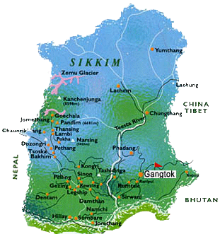

Nestled in the Eastern Himalayas, Sikkim is a mesmerizing tapestry of pristine
landscapes and vibrant culture. This small yet stunning Indian state boasts snow-capped peaks,
lush valleys, and shimmering lakes, all framed by the grandeur of the Kanchenjunga, the
third-highest mountain in the world. Its charming hill stations, like Gangtok and Pelling,
offer a serene escape with breathtaking vistas and a rich tapestry of traditions.
Sikkim’s diverse flora and fauna, coupled with its warm and welcoming people, make it
a haven for nature lovers and adventurers alike, promising an experience that feels both enchanting and tranquil.
|
 |